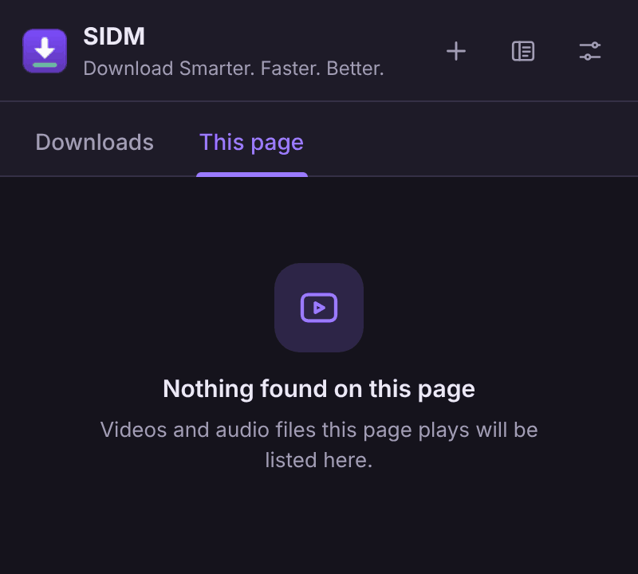

Free for Chrome, Edge and Brave on Windows
Download Smarter. Faster. Better.
SIDM sorts your downloads into folders, queues big files, grabs every link on a page and saves videos from the sites you use. No account. No tracking.
Download SIDMSHA-256: b0c12a7e5e6b919d7feac797e7f2c19f24d6d0357c3c7656a1b124145db53d1c
Then follow the 2 install steps. Takes about a minute, and there is nothing else to install.
On an Android phone? Get SIDM for Android.
Screenshots


Early preview of the popup. Screens will change as features land.
What you get
Everything a download manager should do, inside the browser you already use.
-
Organised downloads
Files land in folders by type: documents, music, video, archives and programs. Your Downloads folder stays tidy without you lifting a finger.
-
Video downloads
Save videos from Facebook, X, LinkedIn, Reddit and many other sites in the quality you pick, with sound and picture joined into one file right in the browser. No extra software.
-
Link grabber
Collect every file link on a page, filter by type or name, tick the ones you want and download them in one go.
-
Download queue
Line up big files and let them run a few at a time. Pause, resume, reorder or retry without starting over.
-
Media detection
When a page plays a video or audio stream, SIDM notices and offers it in the This page tab, ready to save.
-
Private by design
No account, no analytics, no ads. Your settings, queue and history stay on your PC. Read the privacy policy.
Install in 2 steps
SIDM is not in the Chrome Web Store, so you load it yourself. It is quick, and you only do it once.
-
Unzip to a permanent folder
Right-click the ZIP and choose Extract All. Put the folder somewhere it can stay, for example
C:\Users\you\SIDMorDocuments\SIDM.Do not leave it in Downloads or a temporary folder: the browser loads the extension from this folder every time it starts, so moving or deleting it removes the extension.
-
Load the extension
Open the extensions page, switch on Developer mode, click Load unpacked and choose the
extensionfolder inside the folder you just unzipped.Where to find the extensions page in each browser Chrome Go to chrome://extensions. Developer mode is the switch in the top-right corner.Edge Go to edge://extensions. Developer mode is the switch in the left sidebar (at the bottom of the page on narrow windows).Brave Go to brave://extensions. Developer mode is the switch in the top-right corner.Then click the puzzle-piece icon in the toolbar and pin SIDM so it is always one click away.
SIDM for Android
Save videos from Facebook, Instagram, TikTok, X, YouTube and over a thousand other sites, and files from any link, straight to your phone. Free, no account, not in the Play Store, so you install it from here.
SHA-256: baf840100bb09cf44e055e709cb67da108eb5bb1fe77ceeef1323a7f7a8345ec
Phone older than about 2017? Try the 32-bit version (52.4 MB, SHA-256 fdc8a69f2ced40b93d25fbed3deac1476dff09e8014e3582037f5f1beb8fc616).
-
Download on your phone
Open this page on your Android phone and tap Download for Android. If Chrome asks whether to keep the file, tap Download anyway.
-
Install it
Tap the downloaded file. Android asks once to allow installs from your browser: tap Settings, switch on Allow from this source, go back and tap Install. Google Play Protect may say the app is from an unknown developer, because SIDM is not in the Play Store: tap More details, then Install anyway.
-
Share a video to SIDM
In Instagram, TikTok, Facebook, YouTube or X, tap Share, then SIDM. Pick the quality and tap Download. Files go to Downloads/SIDM and show up in your Gallery. You can also paste a link, or browse inside SIDM.
SIDM tells you when a new version is out. Its video engine updates by itself every day, so sites keep working when they change. Only save videos you own or have permission to download. DRM-protected services such as Netflix, Prime Video, Disney+ and Spotify are not supported.
On an iPhone? SIDM for iPhone is not available yet.
Questions and answers
Why is it not in the Chrome Web Store?
The Chrome Web Store does not accept extensions that download videos from social sites. Rather than remove that feature, we publish SIDM here as a ZIP you load yourself. It is the same kind of extension, just installed by hand.
One side effect: because it is loaded in Developer mode, some browsers show a reminder about developer-mode extensions when they start. You can close it.
Can it download from YouTube?
Yes, with the optional SIDM for Windows program (see the install section). YouTube scrambles its video streams, so the extension alone cannot save them. YouTube's Terms of Service do not allow downloading except where YouTube offers a download button, so the first YouTube download shows a notice: only save videos you own or have permission to save. You are responsible for following those terms. You can switch YouTube off in Settings.
Which videos won't work?
Anything protected by DRM, such as Netflix, Prime Video, Disney+ and Spotify. SIDM detects these and refuses; it does not try to get around copy protection.
Live streams cannot be saved while they are live. Private videos and members-only or paid content you cannot see will also fail. If you can't play it in your browser, SIDM can't save it.
Most sites work with the extension alone: play the video for a few seconds, then click Download on it. A few sites, YouTube above all, need the optional companion app.
A site that used to work stopped working. What do I do?
First play the video for a few seconds and click Download again: SIDM saves what the page plays, so it needs the video to start. Sites also change how they serve video now and then; a new SIDM version fixes that, and the popup shows Update available when there is one.
If you use SIDM for Windows, open the Start menu and run Update SIDM tools to fetch the newest yt-dlp.
Is it safe?
SIDM has no account, no analytics and no ads, and it never sends your browsing to us. The extension is plain JavaScript you can read, and on its own it installs nothing else. Only the optional companion setup downloads programs: yt-dlp, ffmpeg and a small embedded Python, all open source, fetched from their public release pages on GitHub and python.org.
The extension asks for broad permissions because a download manager has to see downloads and media on any site. Our privacy policy explains each one.
Does it work on Mac or Linux? Is there an Android version?
Yes for Mac and Linux: the same extension ZIP works in Chrome, Chromium, Edge or Brave. Load it the same way as above.
For YouTube, the optional companion has a Mac and Linux ZIP (29 KB, SHA-256 f937287f71d002c9dfd7fd0ffc2efe6a1fd7e5a235b938bd288739698f915e7a). Extract it next to the extension, open Terminal in the companion folder and run bash install.sh. No sudo needed. It uses the Python 3 that comes with your system (on a Mac, if you are asked to install the Command Line Tools, say yes), downloads yt-dlp and ffmpeg into that folder (on a Mac it uses Homebrew's ffmpeg if you have Homebrew), and connects them to your browsers. To update yt-dlp later, run ./yt-dlp -U in the same folder.
Browsers installed as Snap or Flatpak packages on Linux cannot start the companion; use the browser's regular package instead. For Android phones there is SIDM for Android.